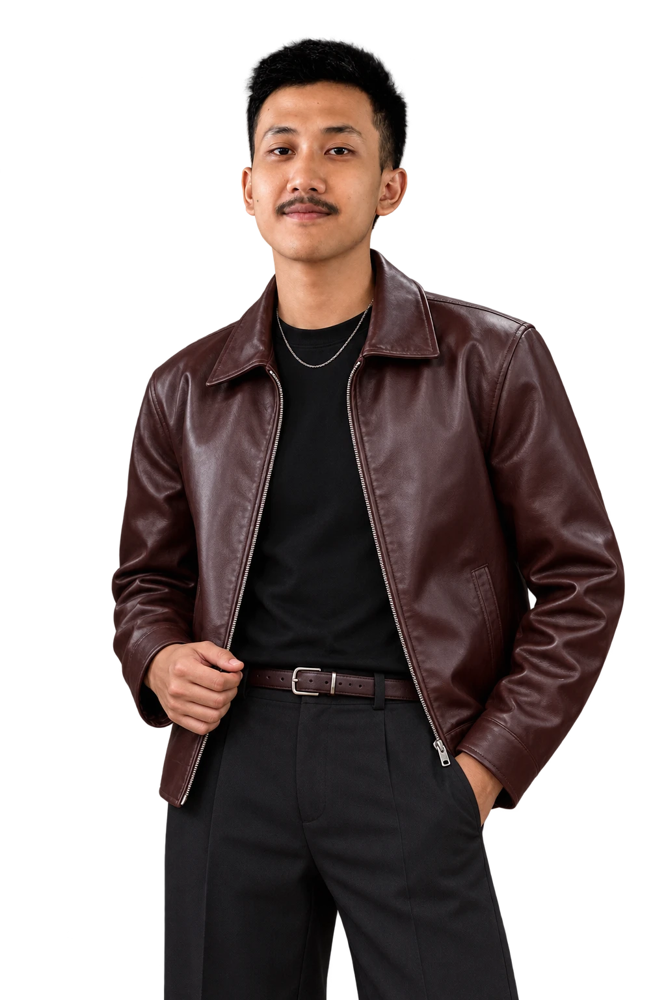
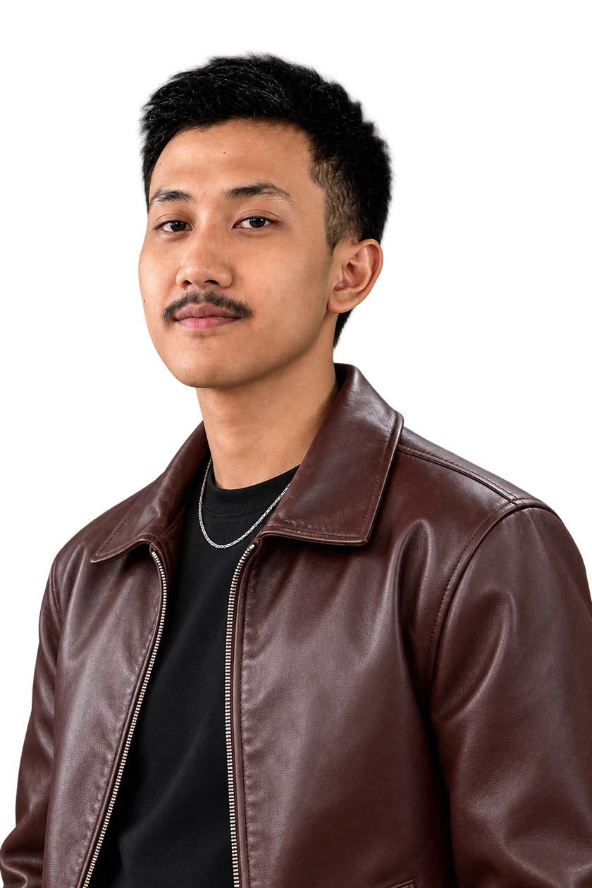

CIANJUR, INDONESIA
Creative

HALO, SAYAHafidz Aulia
Hafidz Aulia
Rachman.
Graphic Designer • Video Editor • Content Creation
CREATIVE PORTFOLIOABOUT ME
ABOUT
ME.

Hello I’m Hafidz Aulia Rachman
Saya Hafidz Aulia Rachman, desainer grafis, video editor, dan kreator konten. Saya mengembangkan ide menjadi desain visual dan video yang menarik untuk kebutuhan media sosial, branding, dan promosi, dengan fokus pada pesan yang jelas dan karakter yang kuat.
Desain Grafis
- Adobe Photoshop
- Adobe Illustrator
- Adobe InDesign
Video Editing & Content Creation
- Adobe Premiere Pro
- CapCut
WORK
EXPERIENCE
CV. NONA TIGA PUTRI
Digital Marketing & Content Planner
—
CV. NONA TIGA PUTRI
Graphic Designer, Video Editor & Content Creator
—
GERRYALDY CREATIVE SERVICE
Freelancer Desain Grafis
— Sekarang
PENDIDIKAN
SMA Negeri 2 Cianjur
Jurusan MIPA
CREATIVE PORTOFOLIOVIDEO EDITING
VIDEO EDITING
SHORTFORM
CINEMATIC & VIDEO PROJECTS
03 / LET’S CREATE Terbuka untuk kolaborasi
Punya ide?
Yuk, wujudkan.
Mari ngobrolUntuk peluang kerja, proyek kreatif,
atau cerita yang perlu divisualkan.